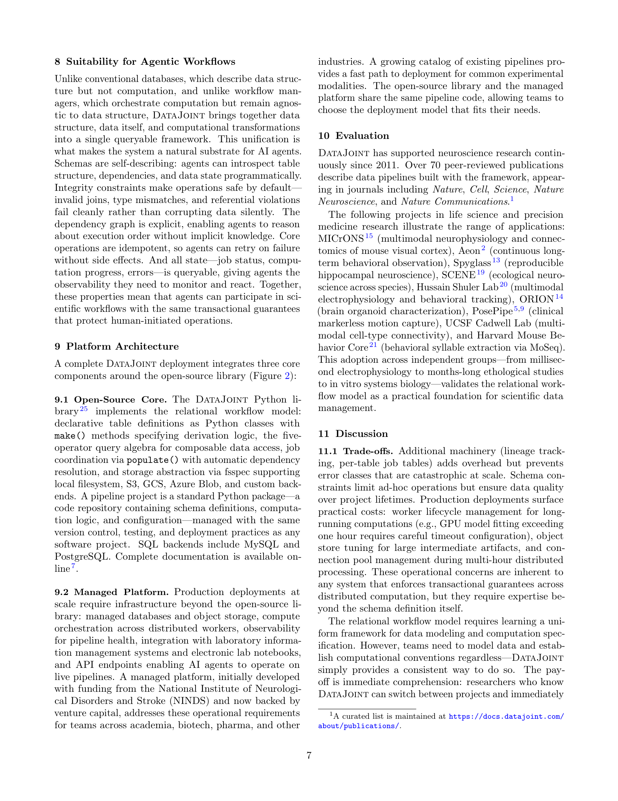

Figure 1
저자: Dimitri Yatsenko, Thinh T. Nguyen | 날짜: 2026-02-18 | arXiv: 2602.16585 | 분야: cs.DB
Figure 1
과학 데이터 파이프라인에 DevOps에 해당하는 "SciOps"를 구현하기 위한 관계형 워크플로우 모델(relational workflow model)을 제안한다. DataJoint 2.0은 테이블을 워크플로우 단계로, 행(row)을 산출물(artifact)로, 외래 키(foreign key)를 실행 순서로 해석하여, 데이터 구조/계산 의존성/무결성 제약을 하나의 쿼리 가능한 형식 체계로 통합한다. 이를 통해 AI 에이전트가 데이터 손상 없이 과학 워크플로우에 참여할 수 있는 계산 기반(computational substrate)을 제공한다.

Figure 2
make() 메서드에 의한 선언적 계산, 외래 키 기반 의존성 그래프를 핵심 원리로 제시관계형 데이터베이스를 단순한 저장 시스템이 아닌 "계산 기반(computational substrate)"으로 재해석한 개념적 전환이 핵심 기여이다. 스프레드시트가 데이터와 수식을 통합한 것처럼, DataJoint은 관계형 데이터베이스에서 데이터와 그 도출 과정을 통합했다. 특히 의미적 매칭(속성 계보 기반 조인 검증)은 AI 에이전트가 이름만으로 의미를 추론할 수 없는 상황에서 데이터 손상을 방지하는 독창적 메커니즘이며, 기존 어떤 데이터베이스 시스템에서도 제공하지 않는 기능이다.
총평: DataJoint의 관계형 워크플로우 모델을 "에이전트 시대"의 과학 데이터 관리 패러다임으로 재정립하려는 시의적절한 시도이다. 개념적 프레이밍(SciOps, active schema)과 기술적 설계(OAS, semantic matching)가 명확하고 설득력 있게 기술되어 있으나, 새로운 알고리즘이나 실험적 검증 없이 기존 시스템의 확장판을 소개하는 형태이므로 학술적 기여는 제한적이다. 특히 "agentic workflow" 지원을 핵심 주장으로 내세우면서도, 실제 에이전트 통합 실험이 없는 점이 가장 큰 약점이다.